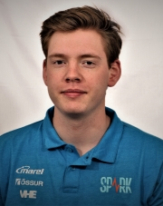

Ferilskrá
Sæmundur Guðmundsson
BSc nemi í Vélaverkfræði við Háskóla Íslands
Um mig
Ég heiti Sæmundur Guðmundsson og er nemandi á þriðja ári í vélaverkfræði við Háskóla Íslands. Ég er duglegur og lausnarmiðaður einstaklingur sem getur unnið vel sjálfstætt sem og í teymi. Ég hef mikinn áhuga á að vinna við nýsköpun og þróun og síðastliðið sumar fékk ég styrk frá Rannís sem gerði mér kleift að vinna við slíkt verkefni undir leiðsögn prófessora. Samhliða náminu hef ég stundað hjólreiðar og tónlistarnám hjá Tónlistarskóla Garðabæjar.
Menntun
Háskóli Íslands
Vélaverkfræði BScÁgúst 2019 - núverandi
Menntaskólinn í Reykjavík
Eðlisfræðideild 1Ágúst 2016 - maí 2019
Starfsferill
Zerobars ehf.
Stofnandi og stjórnarformaðurJúlí 2021 - núverandi
- Ég stofnaði fyrirtækið Zerobars ehf. ásamt tveimur samnemendum mínum í verkfræði í kjölfar vöruþróunnarvinnu okkar sem styrkt var af Rannís.
- Fyrirtækið er komið með fullþróaða vöru og er að vinna í einkaleyfaumsókn eins og er.
Peloton ehf.
Verslunarstjóri og verkstæðisstjóri, sumar- og hlutastarfMaí 2019 - desember 2021
- Sá um tímabókanir, innkaup og skipulagningu verkstæðis, leiðbeindi öðrum starfsmönnum við viðgerðir og samsetningar, sinnti öllum flóknari viðgerðum samhliða hefðbundum viðgerðum, samsetningum og afgreiðslu í verslun.
- Tók virkan þátt í að stækka viðskiptavinahóp fyrirtækisins og skapa orðspor ungrar verslunar um framúrskarandi þjónustu og ánægjuleg viðskipti.
- Gekk í öll störf sem vinna þurfti, allt frá ræstingum og lagerstörfum yfir í skipulagningu, sölu og verkstýringu.
Örninn Hjól ehf.
Viðgerðarmaður og sölumaður, sumarstarfMaí 2015 - ágúst 2018
- Vann við afgreiðslu, lagerstörf og sem viðgerðarmaður á verkstæði.
- Sótti samhliða netnámskeið í sölumennsku og viðgerðum af eigin frumkvæði.
Önnur verkefni
Team Spark
Ég tók virkan þátt í að hanna og smíða rafknúinn kappakstursbíl háskólaliðsins Team Spark. Þar hannaði ég m.a. íhluti fjöðrunarkerfis bílsins og tók þátt í heildarhönnun kerfisins.
Viðgerðanámskeið
Ég hef haldið nokkur reiðhjólaviðgerða- og viðhaldsnámskeið fyrir einstaklinga, hópa og fyrirtæki með góðum árangri.
Önnur kunnátta
Tungumál Framúrskarandi íslenskukunnátta
Mjög góð enskukunnátta bæði í riti og ræðu
Góð dönskukunnátta
Stúdentspróf í þýsku
Tölvukunnátta
Góð kunnátta á CAD forritum - Autodesk Inventor, DS SolidWorks
Góð kunnátta í Python forritunarmálinu
Góð kunnátta á MATLAB
Mjög góð Excel kunnátta
Grunnþekking í FEA forritum - ANSYS
Góð færni í LATEX
Góð kunnátta á helstu Microsoft Office forritum, þar með talin SharePoint og Project
Grunnþekking í HTML forritun
Viðgerðafærni
Ég hef mikla reynslu af viðgerðum, viðhaldi og samsetningu á reiðhjólum. Ég hef góðan skilning á virkni einstakra íhluta sem og ólíkum leiðum til að fá þá til að virka sem ein heild. Auk þess hef ég fengið reynslu af því hvernig hlutir geta bilað sökum galla í hönnun, óviðunandi viðhalds og meðferðar sem og utanaðkomandi þátta.
Áhugamál
- Ég hef stundað tónlistarnám frá átta ára aldri og spila núna á saxofón í Stórsveit Tónlistarskóla Garðabæjar.
- Ég hef æft hjólreiðar frá 12 ára aldri, hef farið á tvenn Evrópumót, unnið fjölda íslandsmeistaratitla og komið að þjálfun og kennslu.
Umsagnaraðilar
Áhugasamir geta haft samband fyrir nánari upplýsingar um umsagnaraðila.